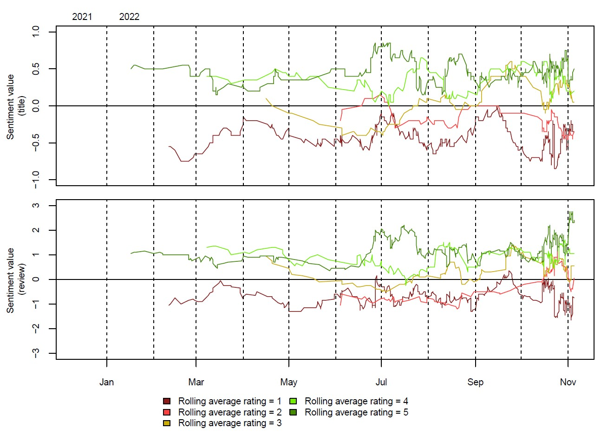
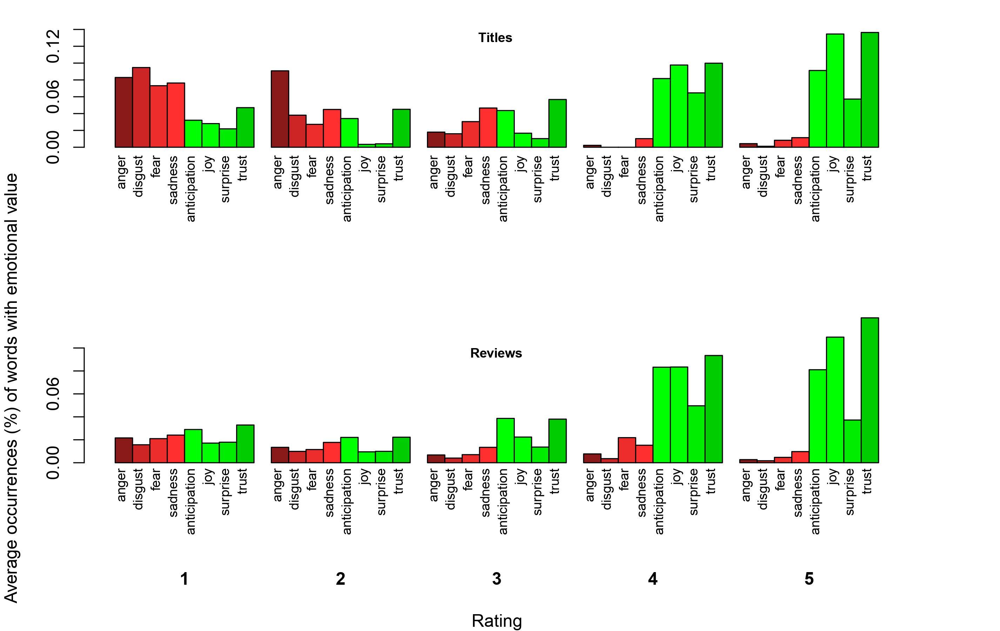
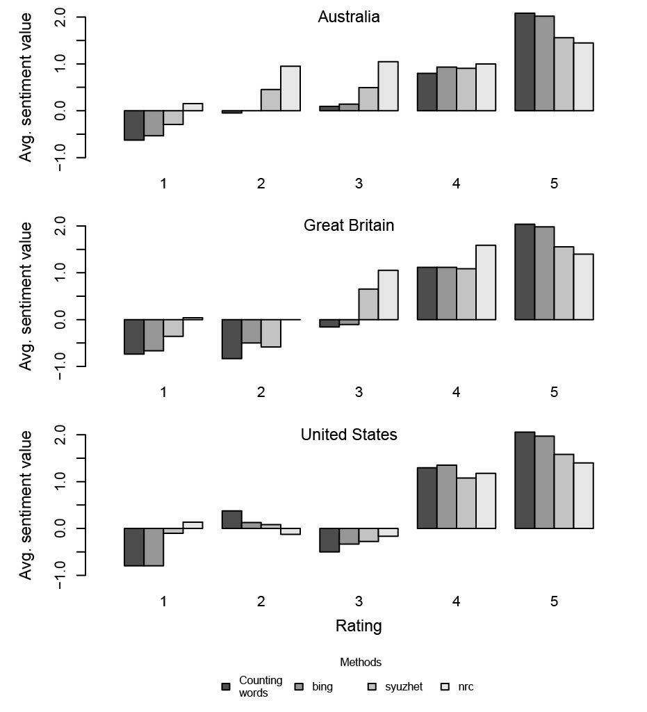

The first graphic displays a rolling average of the NRC value both for the title and the review text of the entry. The NRC Emotion Lexicon is a list of English words and their associations with eight basic emotions and two sentiments. The value ranges from -1 to 1 while a positive value is associated with a positive sentiment. In the graphic clearly, reviews with ratings 4 and 5 show a more positive sentiment in both the title and the actual review text.

The second graphic displays the occurences of words with different emotions. Not surprising, "positive" emotions dominate when there is a higher rating, vice versa.

The third graphic displays the calcultated sentiment values based on reviews from different countries.
